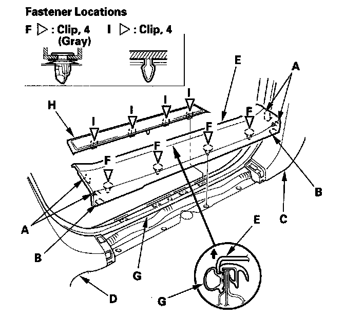
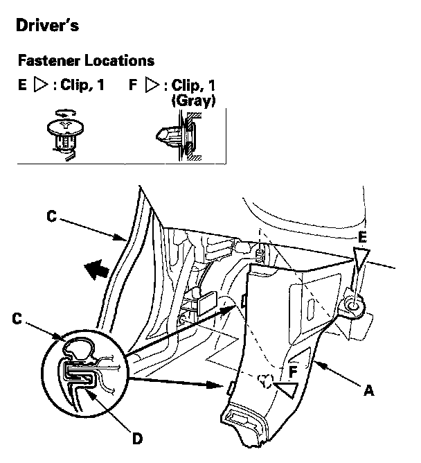
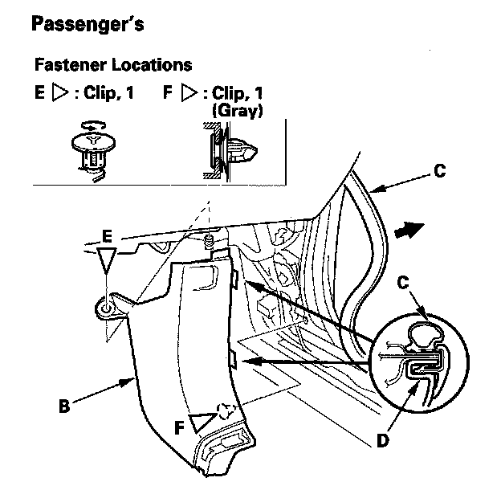
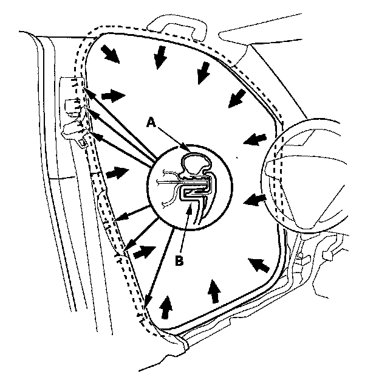
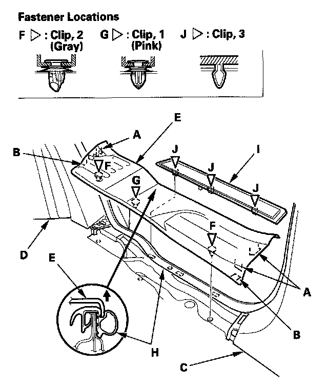
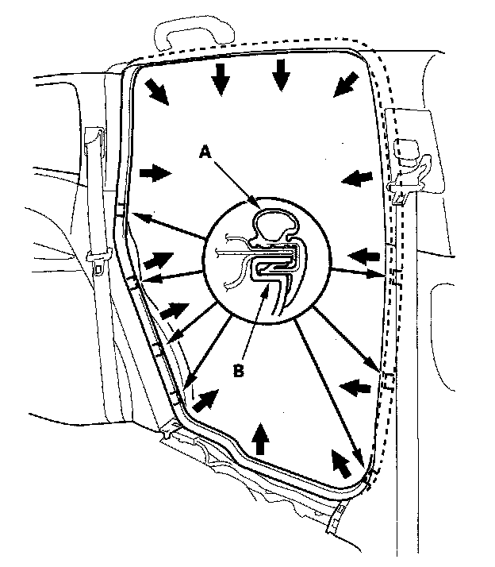

Scuff Plate: Service and Repair
Trim Removal/Installation - Door AreasSpecial Tools Required
KTC trim tool set SOJATP2014 *
* Available through the American Honda Tool and Equipment Program
Front Door Sill Area
NOTE:
- Put on gloves to protect your hands.
- Take care not to bend or scratch the trim and panels.
- Use the appropriate tool from the KTC trim tool set to avoid damage when removing components.

1. Detach the hooks (A) and tabs (B) from the kick panel (C) and B-pillar lower trim (D), and pull the front door sill trim (E) up by hand to detach the clips (F), then remove it from the front door opening seal (G).
2. If necessary, pull the front side outer trim (H) up to detach the clips (I), then remove the trim.


3. Remove the left kick panel (A) or the right kick panel (B).
1. Pull out the door opening seal (C) as needed from the kick panel hooks (D) and the door opening flange.
2. Remove the clip (E).
3. Pull the kick panel back by hand to detach the clip (F), then remove it.

4. Pull out the front door opening seal (A) from the trim hooks (B) and around the front door opening flange, then remove the seal.
5. Install the trim in the reverse order of removal, and note these items:
- If the clips are damaged or stress-whitened, replace them with new ones.
- Push the clips and hooks into place securely.
Special Tools Required
KTC trim tool set SOJATP2014 *
* Available through the American Honda Tool and Equipment Program.
Rear Door Sill Area
NOTE:
- Put on gloves to protect your hands.
- Take care not to bend or scratch the trim and panels.
- Use the appropriate tool from the KTC trim tool set to avoid damage when removing components.

1. Detach the hooks (A) and tabs (B) from the B-pillar lower trim (C) and rear side trim panel (D), and pull the rear door sill trim (E) up by hand to detach the clips (F, G), then remove it from the rear door opening seal (H).
2. If necessary, pull the rear side outer trim (I) up to detach the clips (J), then remove the trim.

3. Pull out the rear door opening seal (A) from the trim hooks (B) and around the rear door opening flange, then remove the seal.
4. Install the trim in the reverse order of removal, and note these items:
- If the clips are damaged or stress-whitened, replace them with new ones.
- Push the clips and hooks into place securely.